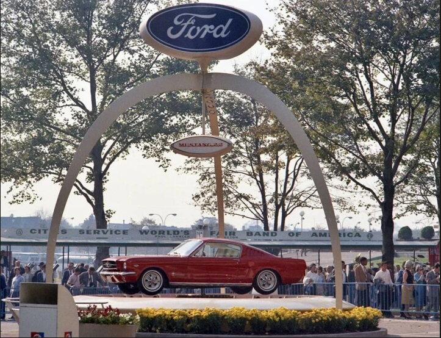
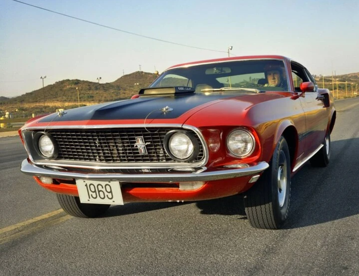

El Ford Mustang no es sólo un auto. Es un misil de cuatro ruedas que cuando ruge le recuerda a su dueño que la vida es para vivirse rápido y con estilo. Para entender el éxito del Mustang hay que retroceder a esa década dorada de los ‘60, cuando Estados Unidos era un paraíso de excesos y sueños imposibles.
El proyecto, conocido internamente como T5, fue ideado por Lee Iacocca, quien se desempeñaba como vicepresidente de Ford Motor Company. Iacocca visualizó un coche que ofreciera estilo deportivo, pero que pudiera producirse en masa a un precio accesible.
Se dice que el éxito fue tan rotundo que la marca vendió más 22.000 unidades en su primer día de lanzamiento, superando todas las expectativas iniciales de la compañía. En su primer año completo de producción, Ford vendió más de 417.000 Mustangs, un récord en ese momento para la industria automotriz estadounidense.
El Mustang hizo su debut oficial en la Feria Mundial de Nueva York, el 17 de abril de 1964, en el pabellón de Ford. Fue como soltar a un potro desbocado en medio de un corral lleno de aburridos sedanes. Las masas no sabían qué los golpeó. En las primeras 24 horas, Ford vendió más de 22.000 unidades. Y en su primer año, 417.000 de estos bestias ya estaban devorando millas. Este auto no era solo un vehículo; era una declaración de guerra contra lo ordinario.


Aunque el Mustang compartía algunas partes con el Falcon, no era simplemente una versión mejorada. Era un depredador, una criatura que incitaba a buscar el límite y a ver hasta dónde se podía llegar antes de que el mundo se terminara. Y lo mejor de todo es que no se necesitaba ser un millonario para tener uno. Este no era el Ferrari del vecino ricachón. El Mustang estaba al alcance del chico de clase media que trabajaba en una estación de servicio, pero soñaba con la pista de carreras
Con la llegada de las versiones Shelby GT350 y el GT500, el Mustang se convirtió en una bestia capaz de competir con los gigantes europeos en velocidad y estilo, pero sin el esnobismo.